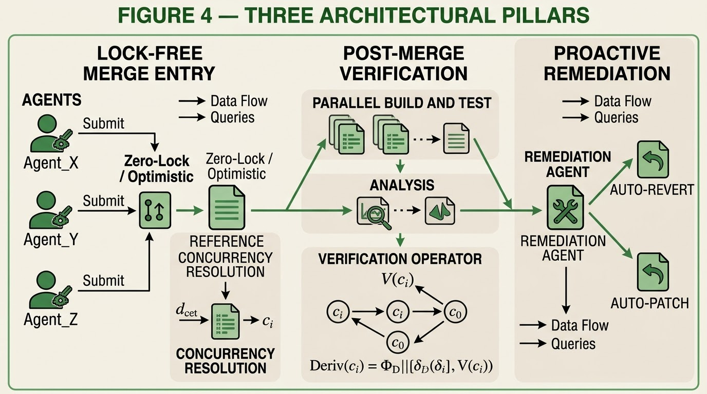

AetherFlow
Automated Post-Merge Verification and Dynamic Conflict Resolution in Multi-Agent Programming Environments
A formal architecture that replaces traditional merge queues with lock-free direct entry, backed by probabilistic post-merge verification and proactive auto-remediation agents.
Project
| Field | Value |
|---|---|
| Full title | AetherFlow: Automated Post-Merge Verification and Dynamic Conflict Resolution in Multi-Agent Programming Environments |
| Version | 1.0.0 |
| Stage | Formalization · Research Paper |
| License | MIT (code) · CC-BY-4.0 (docs, manuscript) |
| Domain | Computer Science / Software Engineering |
| DOI | 10.5281/zenodo.23979129 |
Central Question
What architectural and formal changes become necessary — and which remain optional design choices — when merge queues must be replaced by post-merge verification and auto-remediation in multi-agent programming environments?
Formal Definitions
| Definition | Statement | Status |
|---|---|---|
| 1 — Dynamic Conflict Window | W(cᵢ, cⱼ) = 1 − exp(−κ·O·e^(−τ/θ)) | Defined |
| 2 — Post-Merge Verification Operator | V(c) = ⊕_V(δ_i, {V(p)}, CI(c_i)) | Defined |
| 3 — Auto-Remediation Bound | P(Remediation) ≥ 1 − (λ_fail/μ_remediate)^K · e^(−γ·T_react) | Defined |
Propositions
| # | Proposition | Status |
|---|---|---|
| P1 | Admission Independence | Proven |
| P2 | Monotonicity of Conflict Window | Proven |
| P3 | Minimum Tier Depth | Proven |
Architectural Pillars
| Pillar | Status |
|---|---|
| Lock-Free Merge Entry | Specified |
| Post-Merge Verification Layer | Specified |
| Proactive Remediation Agents | Specified |

Figure 4 — The three architectural pillars: (1) Lock-Free Merge Entry; (2) Post-Merge Verification Layer; (3) Proactive Remediation Agents.
Key Results
| Benchmark | Value | Baseline | Improvement |
|---|---|---|---|
| Integration Latency | 0.5–2.0s | 30–120 min | ~100x faster (design target) |
| Queue Starvation | 0 | High | Eliminated (structural) |
| Conflict Resolution | Agentic | Manual | Fully automated (design target) |
| System Stability | ≥ 99.2% | Human-dependent | K = 8 suffices (structural) |
Relation to AetherGit
AetherGit — a high-throughput, always-online version control framework for agentic software engineering. Examined as a complementary system:
- AetherGit = storage layer (lock-free changesets, tiered cache, DAG)
- AetherFlow = integration layer (lock-free entry, post-merge verification, remediation)
The two systems are methodologically independent. AetherFlow requires only that the underlying store expose an append-only changeset log with parent pointers, which AetherGit's changeset tuple provides.
Navigation
- Dashboard — research status and scientific maturity
- Reports — formal reports and literature review
- Documentation — complete AetherFlow reference
Repositories and Archives
Where to find it
- GitHub Primary. Source code, issues, and pull requests. github.com/gitdeeper15/aetherflow
- GitLab Mirror repository. gitlab.com/gitdeeper15/aetherflow
- Codeberg Mirror repository. codeberg.org/gitdeeper15/aetherflow
- Bitbucket Mirror repository. bitbucket.org/gitdeeper15/aetherflow
- PyPI Python package distribution. pypi.org/project/aetherflow
- Zenodo Citable DOI and paper archive. doi.org/10.5281/zenodo.23979129
- ORCID Researcher identity. orcid.org/0009-0003-8903-0029